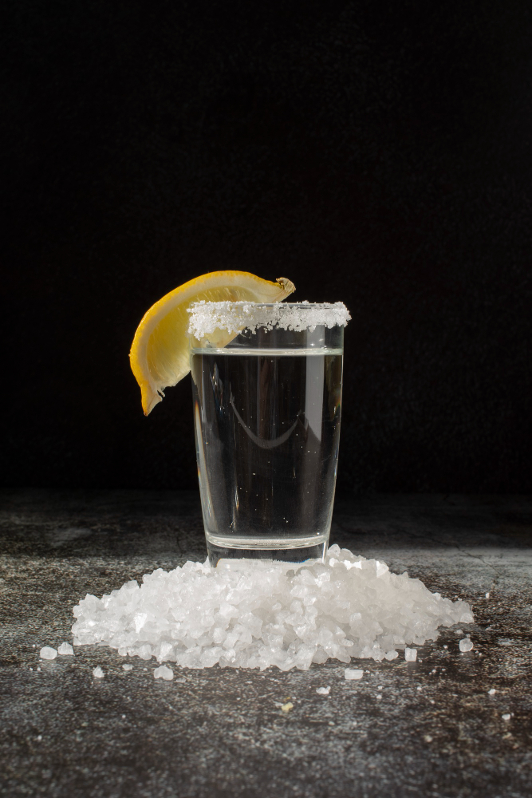

Home

Designed by Freepik
Churchill the Beverage
Fresh and easy, non-alcohol drink
Ingredients
- 250 ml Mineral water
- 1 Amount Lemon
- 2 Tablespoon Salt
Directions
- Squeeze the lemon into glass.
- Pour the mineral water, be careful with bubbles.
- Add salt.
- Additionally, you may add some ice.
Attribution